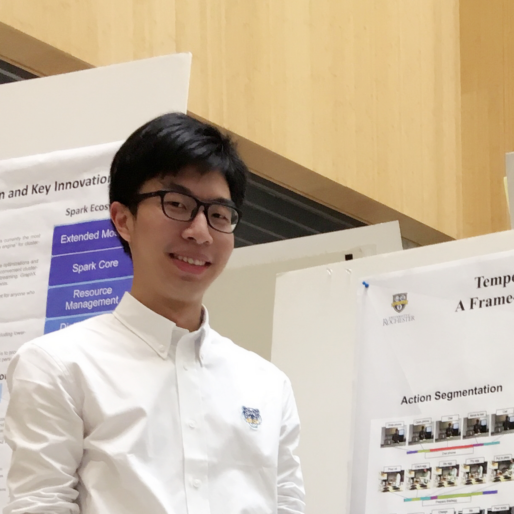

“何以飘零去，何以少团栾，何以别离久，何以不得安。”
——《古剑奇谭》

Li Ding | 丁立
(Full-time) Research Assistant at U. of Rochester
(From) Shanghai, China | (Now) Rochester, NY, US | (To) Boston, MA, US
M.S. in Data Science, U. of Rochester '17
B.S. in Statistics, Central U. of Finance & Economics (CN) '16
Research – Data Science, Machine Learning, Deep Learning, Computer Vision
Fun – Cuisine, Photography, Pokémon, Dancing (Poppin’), Electro-Funk, Anime
Navigation Bar is at the top.
Profile - an up-to-date brief of experiences, my latest CV/Resume.
Research - some of my current and previous academic/research projects.
Fun - lifestyle, photography, dancing, music, and other interesting contents.